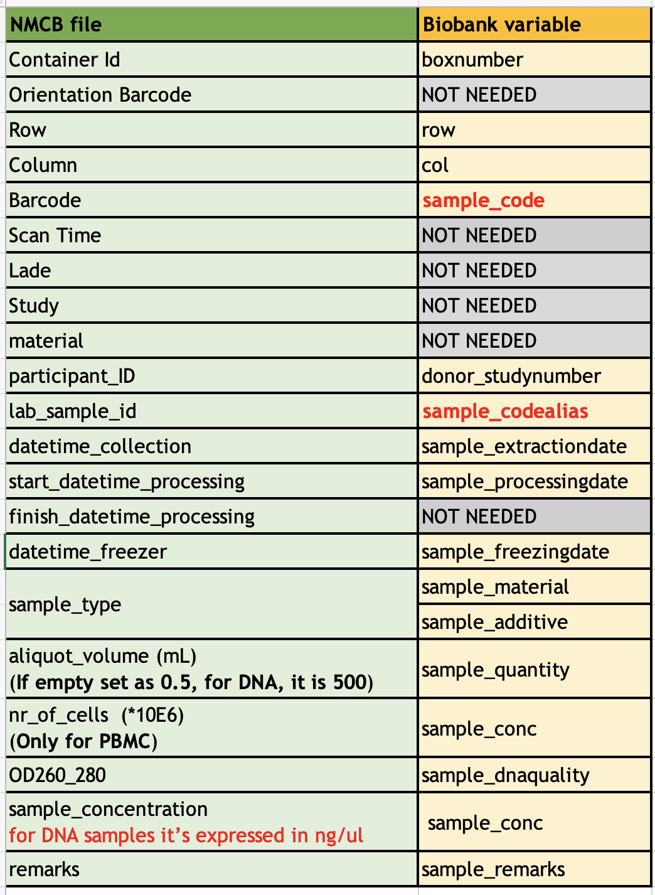
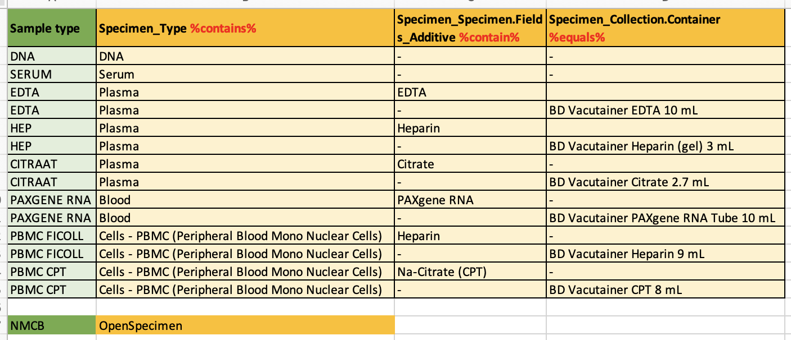
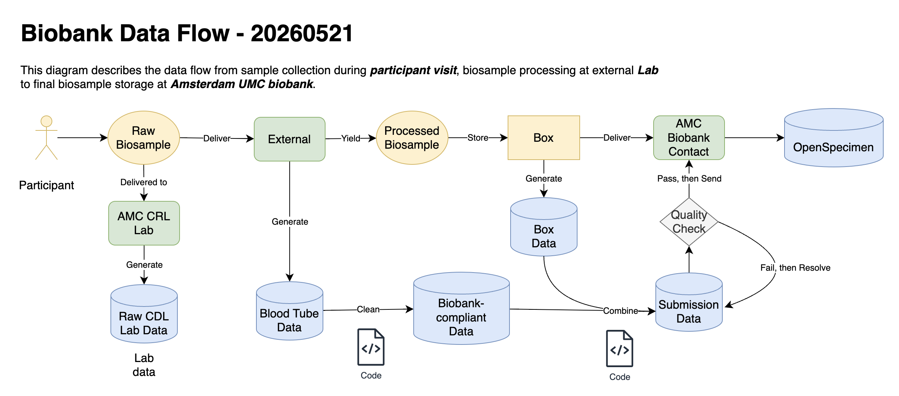

Biobank data¶
Role in NMCB: sample metadata, storage location, and hand-off between labs, Research Drive, OpenSpecimen, and sample requests.
For each aliquot, biobank-related data should answer:
- Where is it stored? (container, box, row, column)
- What is it? (sample type, concentration, and related metadata)
Inventory and release requests are tracked in OpenSpecimen. Operational steps for Radboud processing, box files, and submission are in Multi-centre sample data workflow.
Systems and storage¶
| System / location | Use |
|---|---|
| OpenSpecimen | Authoritative sample inventory and request tracking |
| Amsterdam UMC biobank | Physical storage; receives validated submission files |
Research Drive (Radboud/processed/Biobank/, etc.) |
Box data files, submission files, and processing outputs — see Research Drive |
Data sources¶
Amsterdam UMC (internal lab)¶
Samples are processed by the internal lab and delivered to the biobank. Records are created from that in-house process.
Radboud and multi-centre (external lab)¶
Samples are tracked in the template Data lab NMCB - Blood tubes file.xlsm. Field names and values differ from the biobank database, so NMCB maintains explicit variable and sample type mappings before submission.
Use the codebook and mapping figures below when building or validating biobank submission files.
Reference files¶
| File | Description |
|---|---|
| NMCB biobank codebook v1 | Variable definitions and mapping rules |
| Understand OpenSpecimen | OpenSpecimen fields and how they relate to NMCB |
| NMCB Blood Label | Blood tube index: ID, cap colour, sample type |
External lab → biobank mappings¶
Variables¶
Map fields from the external-lab template to biobank variables:

Figure: variable mappings (external lab → biobank).
Sample types¶
Map external-lab sample type labels to biobank sample types:

Figure: sample type mappings (external lab → biobank).
Biobank data flow¶
End-to-end path from collection through storage and requests (internal and external):

Figure: biobank data flow.
| File | Description |
|---|---|
| Biobank data flow (draw.io) | Editable source for the workflow diagram |
Radboud / multi-centre detail: RL file processing, box file naming, expansion into a Biobank Submission File, validation, and FileSender delivery — see Multi-centre sample data workflow.
Sample requests: end-to-end procedure — Biosample request workflow; automation — Sample request.
Blood tube labels (NMCB)¶
Index of blood tubes used at visit: cap colour and sample type. Full reference: NMCB Blood Label.
| ID | Color | Type |
|---|---|---|
| 1 | Purple small | EDTA for DNA |
| 2 | Red | Serum |
| 3 | Purple large | EDTA Plasma 01 |
| 4 | Green | PBMC Na-Heparin |
| 5 | Green | PBMC Na-Heparin |
| 6 | Green | PBMC Na-Heparin |
| 7 | Green | Heparin Plasma |
| 8 | Purple large | EDTA Plasma 02 |
| 9 | Blue | Citrate 01 |
| 10 | Blue | Citrate 02 |
| — | PAXGene Eigen Sticker | PAXGene RNA 01 |
| — | PAXGene Eigen Sticker | PAXGene RNA 02 |
| 11 | Camouflage | PBMC CPT 01 |
| 12 | Camouflage | PBMC CPT 02 |
Contacts (Amsterdam UMC biobank)¶
| Role | Contact |
|---|---|
| General | biobank@amsterdamumc.nl |
| Maureen | m.e.s.vanderarend@amsterdamumc.nl |
| Erik van Iperen | e.p.vaniperen@amsterdamumc.nl — can grant OpenSpecimen access |
Related¶
- OpenSpecimen — sample tracking system
- CDL alert workflow — CRL / CDL lab results (blood label xlsx stored with CDL files)
- Multi-centre sample data workflow — RL file, boxing, submission
- Biosample request workflow — requesting samples from the biobank
- Sample request — R automation for selection and exports
- Research Drive — shared storage layout